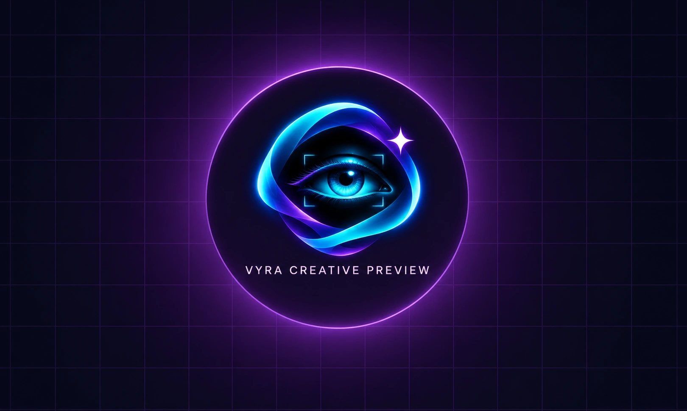

← Back to dashboard✦ AI VIDEO GENERATOR
Create Videos with AI
Describe your idea, add a reference and customize your creation.


✦ VYRA CREATIVE PREVIEW · AI CONNECTION PENDINGAI generation requires a connected provider and secure server-side API. For now, submitting saves a creative brief, not a generated photo or video.
✧ Advanced settings Optional
Example Prompts
Click to try one VYRA
VYRA